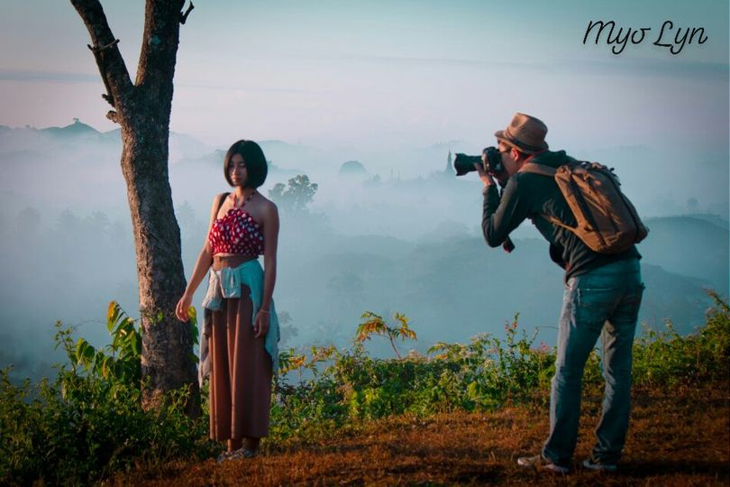
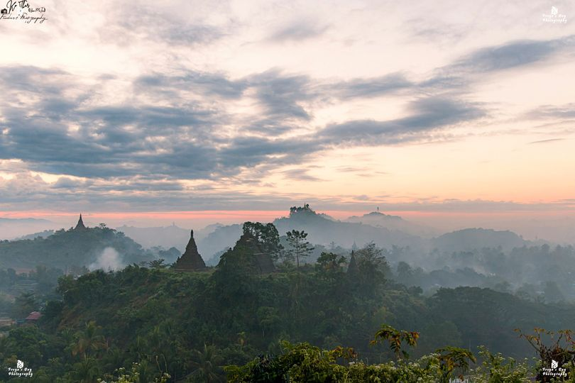
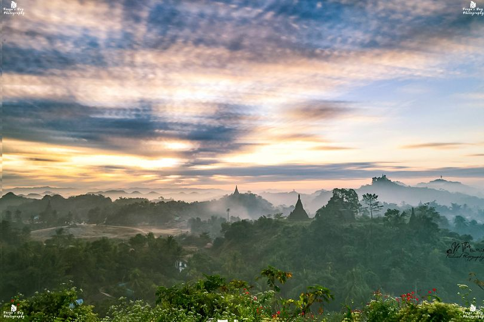
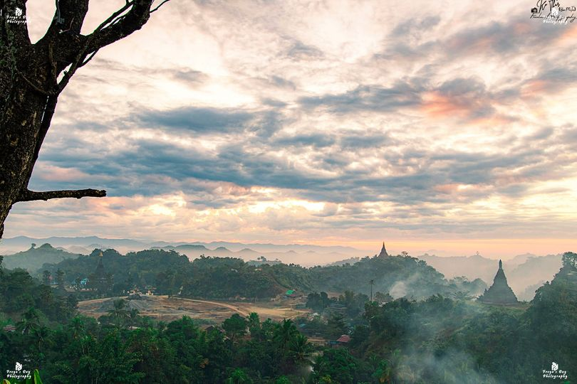
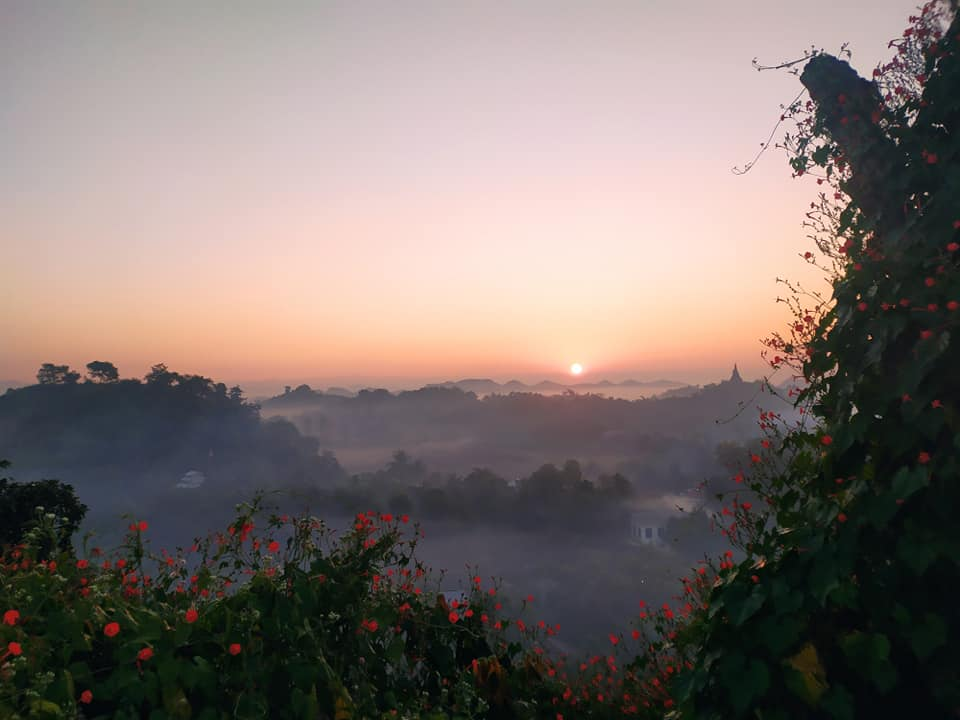

Mya Wah Mountain

The misty morning is another attraction of the city. down that completes with mist among mountain ranges and
pagodas is a kind of art.
U Mya Wah mountain that high about 200 feet are one of the best places to catch photos of famous misty down of
Mrauk U. That mountain exists in the area that far less than half-mile in the North East of Mrauk U old palace.
There is U Mya Wah pagoda at the top of the mountain.

U Mya Wah is a famous advisor of King Min Bar Gyi and also the cousin of the king. One day, U Mya Wah calculated
the fortune of Mrauk U city and his predictions showed that a man who was born on Thursday needs to sacrifice
his life for the sake of long-lasting of Mrauk U city. So, he sacrificed his own life. After U Mya Wah dead,
King Min Bar Gyi made good dead for him and constructed the pagoda on 1537 and it was renovated for four times
later.
Every step along Mrauk U waits with interesting places, legends, and beautiful art and culture that it will not
be enough for visitors to explore them in one time.


